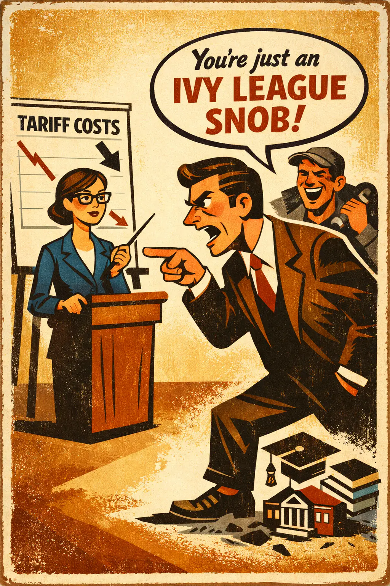
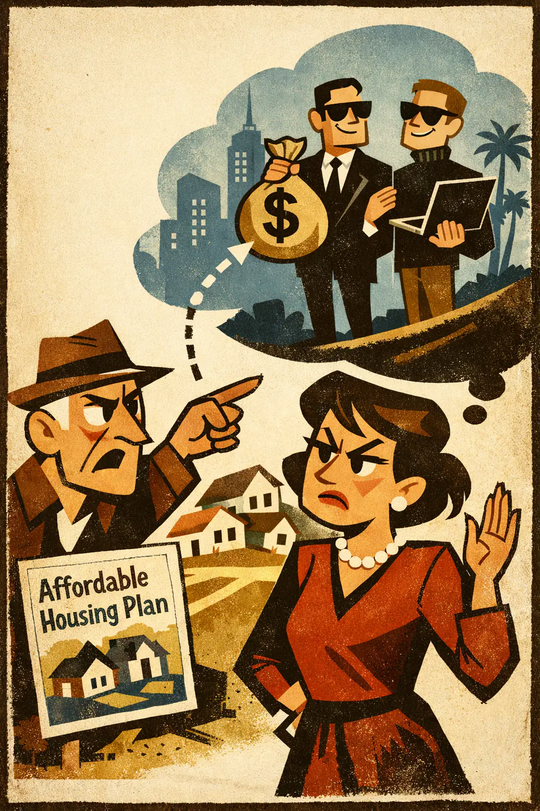
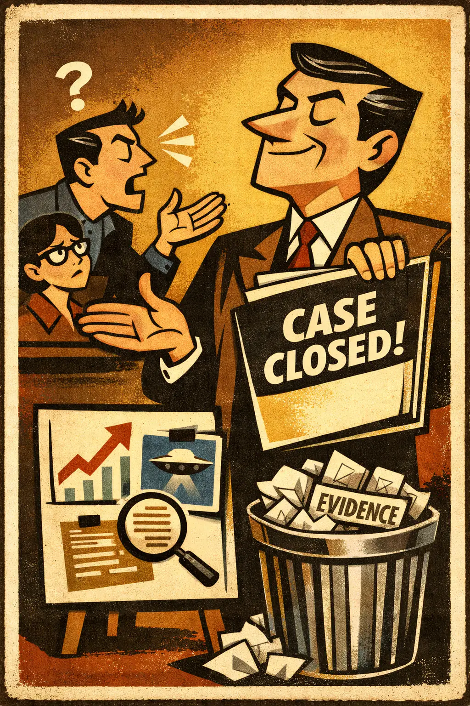
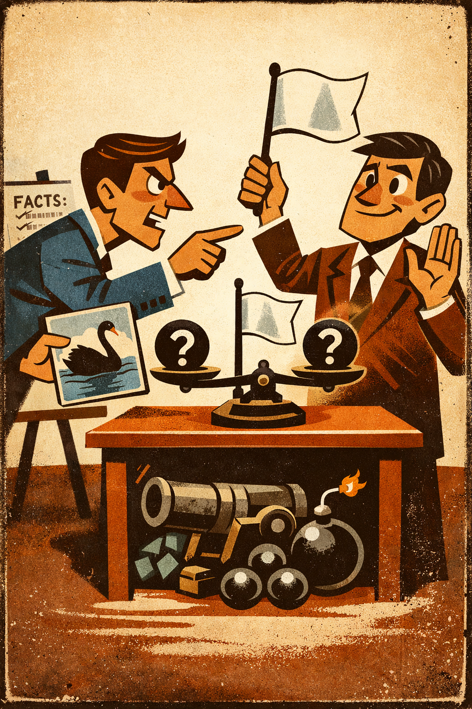
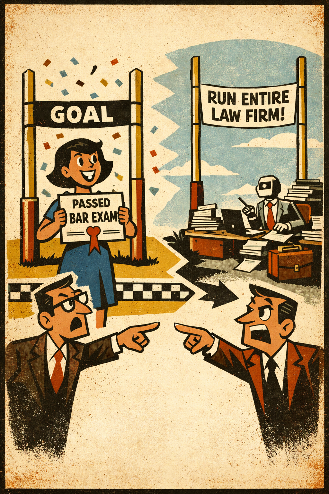
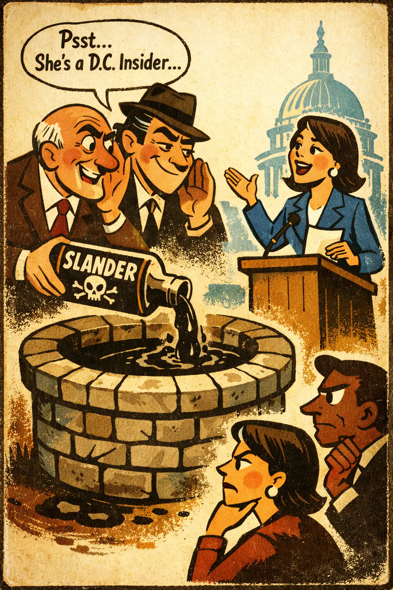
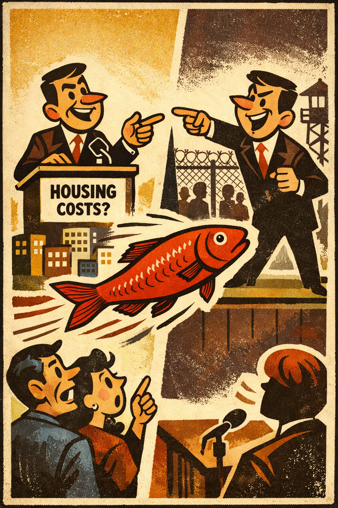
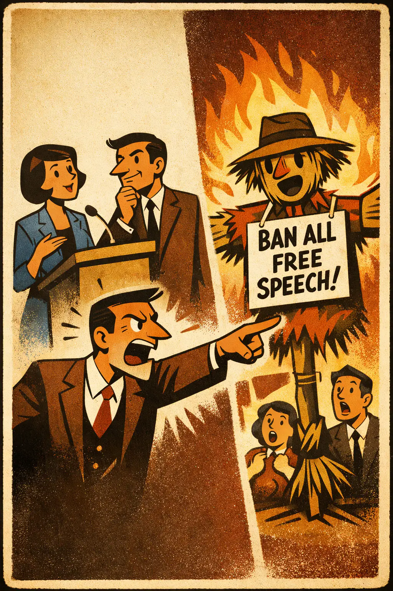
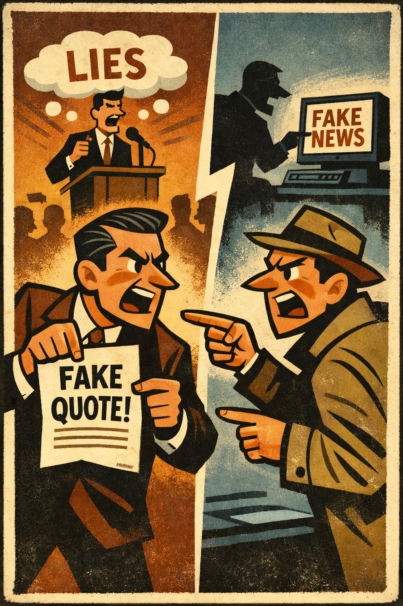

Ad hominem
Occurs when someone treats an attack on a person's character, motives, class, or biography as if it were a refutation of that person's argument.
TacticalEmotional
Foundational
Middle school+

Logical Fallacies
A practical logical-fallacies reference with clear explanations, usable examples, and teaching tools.
Family
The move shifts attention away from the real issue and substitutes something rhetorically nearby but logically irrelevant.
Occurs when someone treats an attack on a person's character, motives, class, or biography as if it were a refutation of that person's argument.

Occurs when a claim is accepted or dismissed because of some irrelevant association rather than because of the merits of the claim itself.

Occurs when someone declares an argument false, debunked, or dishonest without identifying the specific flaw that would actually show it is false.

Occurs when someone calls for a truce, balance, or 'agree to disagree' posture not because the evidence is genuinely inconclusive, but because their position is under pre...

Occurs when a claim, practice, or idea is judged mainly by its origin rather than by its present content, evidence, or merits.

Occurs when evidence that was supposed to satisfy a stated standard is dismissed and a new, harder standard is introduced so the conclusion never has to be reconsidered.

Occurs when negative framing is introduced in advance so that whatever a person says next will be dismissed before it is fairly heard.

Occurs when someone diverts attention from the unresolved issue by switching to a different issue that is easier, safer, or more emotionally useful.

Occurs when someone replaces an opponent's actual position with a weaker, more extreme, or simplified version and then refutes that easier target.

Occurs when criticism is answered not by engaging the issue, but by pointing to similar hypocrisy or wrongdoing elsewhere.

Occurs when someone treats one wrong act as justified because it responds to, retaliates against, or balances out another wrong.